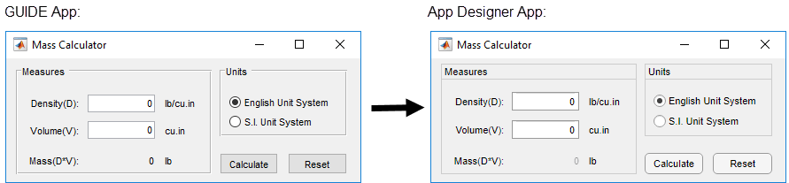
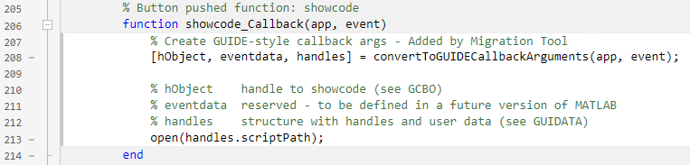
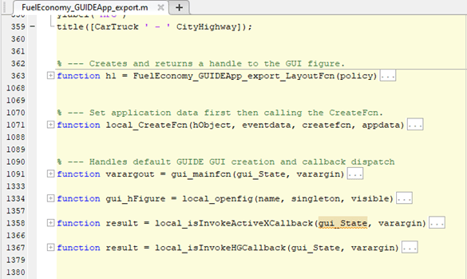

GUIDE Migration Strategies
GUIDE, the original drag-and-drop environment for building apps in MATLAB®, was removed in R2025a. You can continue to run existing GUIDE apps, and you can continue to edit app program files if you need to change the behavior of an app.
To continue working with an existing GUIDE app and to maintain its compatibility with future MATLAB releases, use one of the recommendations listed in this table.
| App Development Needs | Recommendation | Details |
|---|---|---|
| Ongoing development | Migrate your app to App Designer. | Migrate GUIDE App to App Designer |
| Occasional editing | Edit your app using the existing app code file that GUIDE created. | Edit GUIDE App Code File |
| Only running | Continue to run your GUIDE app. | To run an existing GUIDE app, run the app code file associated with the app. |
Alternatively, you can export your GUIDE app to a single MATLAB file. However, you cannot migrate an exported app to App Designer in the future. For more information, see Export GUIDE App to MATLAB File.
Migrate GUIDE App to App Designer
Note
This functionality requires the GUIDE to App Designer Migration Tool for MATLAB.
Migrating your GUIDE app to App Designer allows you to continue developing the layout of your app interactively. It also allows you to take advantage of features like an enhanced UI component set and auto-reflow options to make your app responsive to changes in screen size. And it gives you the ability to create and share your app as a web app (requires MATLAB Compiler™).
Use this option for GUIDE apps that require significant or ongoing feature development. To migrate your GUIDE app, first download the GUIDE to App Designer Migration Tool for MATLAB.
There are several ways to migrate your app.
In App Designer, open any app and go to the Designer tab. In the File section, click Open > Open GUIDE to App Designer Migration Tool.
In the MATLAB Command Window, call the
appmigration.migrateGUIDEAppfunction. You can use this function to migrate multiple GUIDE apps as a batch.
Features of the Migration Tool
The migration tool helps you convert your apps by reading in a GUIDE FIG file and automatically generating the App Designer equivalent components and layout in an MLAPP file. Your GUIDE callback code and other user-defined functions are copied into the MLAPP file. This semi-automated code conversion also creates a migration report that suggests actions for any manual code updates that are needed. Some features of the tool are described in this table.
| Migration Tool Features | Description | |
|---|---|---|
| File Conversion | Read in a GUIDE FIG file and
associated code and then generate an App Designer MLAPP file.
The App Designer file name takes the form
guideFileName_App.mlapp. | |
| Components and App Layout | Convert components and property configurations to App Designer equivalents, and preserve the layout of the app.  | |
| Callback Code | Retain a copy of the GUIDE callback code and user-defined functions in the MLAPP file. | |
| Tutorial | Step through the changes made to your migrated app. | |
| Migration Report | Summarize the actions successfully completed by the migration tool. List any limitations or unsupported functionality, specific to your app, with suggested actions if available. | |
Callback Code
In order to make your GUIDE-style callback code compatible with the App
Designer UI components in your app, the migration tool uses a function called
convertToGUIDECallbackArguments. This function converts
App Designer callback arguments into the GUIDE-style callback arguments that
your code requires. The convertToGUIDECallbackArguments
function is added to the beginning of each migrated callback function. It takes
the App Designer callback arguments app and
event and returns the GUIDE-style callback arguments
hObject, eventdata, and
handles. For example:

Each of the GUIDE-style callback arguments is used for a different purpose:
hObjectis the handle of the object whose callback is executing. For components from your GUIDE app that wereUIControlorButtonGroupobjects,hObjectis a handle to aUIControlPropertiesConverterorButtonGroupPropertiesConverterobject. These objects are created to make your GUIDE-style code work in your App Designer callback functions.eventdatais usually empty, but can be a structure containing specific information about the callback event.handlesis a structure that contains the migrated child components of the UI figure that have a'Tag'property value set. Child components that wereUIControlobjects in your GUIDE app areUIControlPropertiesConverterobjects in the migrated app. Similarly, childButtonGroupobjects areButtonGroupPropertiesConverterobjects in the migrated app.
The UIControlPropertiesConverter and
ButtonGroupPropertiesConverter objects act like adapters
between the GUIDE-style code and the App Designer components and callbacks. A
UIControlPropertiesConverter object is created for each
component in your GUIDE app that was a UIControl object.
These converter objects are associated with an App Designer UI component in your
migrated app. The converter object has the same properties and values as the
original UIControl from your GUIDE app, but it applies them
to its associated App Designer UI component.
Similarly, for ButtonGroup objects from GUIDE, a
ButtonGroupPropertiesConverter object is created in App
Designer. This object makes it possible to set the
SelectedObject property to a
UIControlPropertiesConverter object so that button group
SelectionChangedFcn callback logic will function.
Special Considerations
There are some circumstances that require you to take extra steps before or after you migrate your app. This table lists common scenarios and coding patterns that require extra steps or manual code updates. This is not intended to be a comprehensive list.
| GUIDE App Feature | Description | Suggested Actions |
|---|---|---|
| Multiwindow apps (that is, two or more apps that share data) | Multiwindow apps require each app to be migrated separately.
Migrated app file names are appended with
_App. Calls to these apps from other apps
must be updated. | Migrate each app separately. In the calling app, update the name of the app that is being called to the new file name. Alternatively, use the |
| Radio buttons and radio button callbacks | The migration tool does not migrate radio buttons that are not parented to a radio button group, or callback functions for individual radio buttons. | Create a button group in App Designer and add radio buttons
to it. To execute behavior when radio button selection is
changed, create a SelectionChangedFcn
callback function for the button group. For more information,
see uiradiobutton
and ButtonGroup. |
ButtonDownFcn,
KeyPressFcn, and
KeyReleaseFcn callbacks | The migration tool does not migrate button down and key press
callbacks on UIControl objects because there
is no equivalent callback in App Designer. | After migrating your app, update your code to replicate
the behavior by creating a new callback based on the
component. For example, if your app contains an edit field,
create a If the component does not have a
callback with the equivalent functionality, instead create a
function figure1WindowButtonDown(app,event) if app.figure1.CurrentObject == app.listbox1 % Execute callback code end end |
| Menu bars and toolbars | The default figure menu bar and toolbar are not supported in App Designer. | Create custom menu bars and toolbar using the Menu Bar and Toolbar components in the App Designer component library. If your app depends
on the default menu bar and toolbar, you can alternatively
set the figure |
uistack | Calling this function on GUIDE-style objects migrated to App Designer is not supported. | Update your code to use App Designer components. You can then
call the uistack function on these objects.
For more information, see Update Migrated App Callback Code. |
findobj, findall, and
gcbo | Using | Reference components using the handles
structure instead, or update your code to use the associated App
Designer component, properties, and values. |
nargin and
nargchk | Helper functions are migrated to app methods and have
app as an additional input argument. This
can cause incorrect nargin or
nargchk logic. | Increment check values by 1. |
OutputFcn(varargout) and
Figure output | There is no equivalent functionality in App Designer. When you instantiate a migrated App
Designer app, the output is always the app object, not the
| If your If your function out = MyGUIDEApp(varargin) app = MyMigratedApp(varargin{:}); out = app.UIFigure; end |
If your GUIDE app integrates third-party components using functions like
actxcontrol, see Recommendations for MATLAB Apps Using Java and ActiveX.
Differences Between GUIDE and App Designer Code
App Designer and GUIDE have different code structures, callback syntaxes, and techniques for accessing UI components and sharing data. Understanding these differences is useful if you plan to add new App Designer features to your migrated app or want to update it to use App Designer code style and conventions. This table summarizes some of these differences.
| Difference | GUIDE | App Designer | More Information |
|---|---|---|---|
| Using Figures and Graphics | GUIDE calls the GUIDE calls the
All MATLAB graphics functions are supported. There is no need to specify the target axes. | App Designer calls the App Designer
calls the Most MATLAB graphics functions are supported. | Display Graphics in App Designer |
| Using Components | GUIDE creates most components with the
| App Designer creates each UI component with its own
dedicated function. More components are available, including
| App Building Components Update UIControl Objects and Callbacks |
| Accessing Component Properties | GUIDE uses For example, | App Designer supports For example, | Callbacks in App Designer |
| Managing App Code | The code is defined as a main function that can call local functions. All code is editable. | The code is defined as a MATLAB class. Only callbacks, helper functions, and custom properties are editable. | Manage Code in App Designer Code View |
| Writing Callbacks | Callback functions created by GUIDE have three input
arguments: For
example, | Callback functions created by App Designer have two
input arguments: For
example, | Callbacks in App Designer |
| Sharing Data | To store and share data between callbacks and
functions, use the For
example, | To store and share data between callbacks and
functions, use custom properties to create variables.
| Share Data Within App Designer Apps |
Update Migrated App Callback Code
Migrated apps use GUIDE-style objects and code conventions. It is a good practice to update the callback code in your migrated app to use App Designer objects and code conventions. Updating your callback code provides support for modern app building functionality and makes the app easier to maintain. To update your code, follow these steps:
Use App Designer UI components — In your callback functions, update references to the
handlesstructure to instead use theappobject. Thehandlesstructure gives access to converter objects that representUIControlobjects in your GUIDE app, whereas theappobject gives access to the UI components in the App Designer app.For example, a GUIDE-style callback sets the background color of a push button style
UIControlobject using this code:handles.pushbutton1.BackgroundColor = 'red';Update this code to set the background color of the button UI component directly:
app.pushbutton1.BackgroundColor = 'red';Update UI component properties — Update the properties that your callback code sets. In general,
UIControlobjects and their equivalent UI component objects have many of the same properties. However, there are some differences in the property names or the types of values that the properties accept. To see a comparison betweenUIControland UI component objects and properties, and to learn how to update your code to use UI components, see Update UIControl Objects and Callbacks.Delete unused code — Once a callback function no longer uses the
hObject,eventdata, andhandlesarguments, delete the line of code added by the migration tool that creates those arguments:[hObject,eventdata,handles] = convertToGUIDECallbackArguments(app,event);
If your app creates dialog boxes using functions such as
errordlg or warndlg, you can also
update your code to take advantage of modern dialog boxes created specifically
for app building, such as uialert and
uiconfirm. For more information, see Update Dialog Boxes.
Edit GUIDE App Code File
A GUIDE app consists of two files:
A FIG file, with extension
.fig, that contains a description of the layout and each component, such as push buttons, axes, panels, menus, and so on.An app code file, with extension
.m, that contains initialization code and callbacks that control app behavior.
If you need to only occasionally edit your existing GUIDE app, such as making minor changes to maintain compatibility with future MATLAB releases, you can maintain the app by editing the code file in the MATLAB Editor. You can edit both the app behavior and the app layout using this strategy.
Note
Do not edit the FIG file directly. Doing so might lead to unexpected behavior or errors.
Identify Component Tag
To make changes to the appearance or callback of a component in your app,
first identify the value of the Tag property of the
component. The code generated by GUIDE uses the value of this property to access
the component. For example, if you have a button with a Tag
value of pushbutton1, the name of the callback function for
the component is pushbutton1_callback, and you can modify the
object by accessing handles.pushbutton1.
To find the Tag value of a specific component, first run
your app with an output argument to return the Figure object
for your app. Then, use one of these strategies to access the component:
Call the
findobjfunction — Pass theFigureobject to the function to display a list of all components and their tags. You can further filter the output by specifying property values for the component to identify. For example, to identify the tag of a push button with the text"Click me", use this code:f = myGUIDEApp; h = findobj(f,"Style","pushbutton","-and","String","Click me")
Use the
CurrentObjectproperty of the figure — First, click a component in the running app. Then, query the figureCurrentObjectproperty. The property returns the last object clicked in the figure.
Finally, once you have access to the component object, query its
Tag property using dot
notation.
tag = h.Tag
Edit App Behavior
Components in apps created using GUIDE have associated callback functions in the code file. The functions control the behavior of the app when a user interacts with it. You can continue to edit these callback functions to maintain your app.
For example, this function definition is an example of a GUIDE-generated callback function
for a push button with tag pushbutton1. You can add code to
this function that executes when a user pushes the
button.
function pushbutton1_Callback(hObject,eventdata,handles) % hObject handle to pushbutton1 (see GCBO) % eventdata reserved - to be defined in a future version of MATLAB % handles structure with handles and user data (see GUIDATA) end
myui, then GUIDE sets
the Callback property to this
value:@(hObject,eventdata)myui('pushbutton1_Callback',hObject,eventdata,guidata(hObject))pushbutton1_Callback. This anonymous function has four
input arguments. The first argument is the name of the callback function. The
last three arguments are arguments that all callbacks in apps created with GUIDE
must accept. In GUIDE-generated callback functions, these arguments are:
hObject— The UI component that triggered the callback.eventdata— A variable that contains detailed information about specific mouse or keyboard actions.handles— Astructthat contains all the objects in the UI. The UI uses theguidatafunction to store and maintain this structure.
The eventdata argument provides detailed information to
certain callback functions. For example, if an app user triggers the
KeyPressFcn callback, then MATLAB provides information regarding the specific key (or combination of
keys) that the app user pressed. If eventdata is not
available to the callback function, then MATLAB passes it as an empty array. This table lists the callbacks and
components that use eventdata.
| Callback Property Name | Component |
|---|---|
WindowKeyPressFcnWindowKeyReleaseFcnWindowScrollWheelFcn | figure |
KeyPressFcn | figure, uicontrol,
uitable |
KeyReleaseFcn | figure, uicontrol, uitable |
SelectionChangedFcn | uibuttongroup |
CellEditCallbackCellSelectionCallback | uitable |
Edit App Layout
Every app created using GUIDE has a function named
appname_OpeningFcn
For example, suppose your app has a push button with the tag
pushbutton1. To change the text on the button and update
the button width, add this code to the OpeningFcn callback in
your code file.
btn = handles.pushbutton1;
btn.String = "Push me";
btn.Position(3) = 30;
You can also add and delete components from your app. Whenever you add or
delete components, update the handles structure. Then, at the
end of the callback function, add this code to save the structure using the
guidata
function.
guidata(hObject,handles)
For example, to delete the push button, add this code to the
OpeningFcn callback.
delete(handles.pushbutton1)
handles = rmfield(handles,"pushbutton1");
guidata(hObject,handles);To add a check box to the app, add this code to the
OpeningFcn callback.
cbx = uicontrol(handles.figure1, ... Style="checkbox",Position=[20 10 80 20],Tag="checkbox1"); handles.checkbox1 = cbx; guidata(hObject,handles);
To add a component with a callback, you must add some additional code to the
file to incorporate the behavior into the app. For example, to add a check box
that displays some text when its value changes, first add this code to the
OpeningFcn callback, replacing
myui with the name of your app file. The code
creates the check box, assigns it a unique tag, and specifies a callback
function named checkbox1_Callback.
cbx = uicontrol(handles.figure1, ... Style="checkbox",Position=[20 10 20 20],Tag="checkbox1", ... Callback=@(hObject,eventdata)myui("checkbox1_Callback",hObject,eventdata,guidata(hObject))); handles.checkbox1 = cbx; guidata(hObject,handles);
Then, add the callback function to the code file. Specify the three input arguments that MATLAB passes to callbacks in GUIDE apps.
% --- Executes on value changed in checkbox1. function checkbox1_Callback(hObject,eventdata,handles) % hObject handle to checkbox1 (see GCBO) % eventdata reserved - to be defined in a future version of MATLAB % handles structure with handles and user data (see GUIDATA) disp("Value changed") end
Export GUIDE App to MATLAB File
Exporting a GUIDE app converts it into a programmatic app by re-creating the GUIDE FIG and app code files together in a single MATLAB program file. In most cases, either migrating the app to App Designer or editing the GUIDE app code file makes it easier to maintain your app long-term. However, this option is useful if you want to work with a single app file.
To export your app, in App Designer, open any app and go to the
Designer tab of the toolstrip. In the
File section, select Open > Open GUIDE to App Designer Migration Tool. Expand the Export to Single Code File panel in
the dialog box, select the FIG file associated with your app, and then click
Export. MATLAB creates a program file with _export appended to the
file name. The new file contains your original callback code plus autogenerated
functions that handle the creation and layout of the app. An example of these added
functions is shown here.
